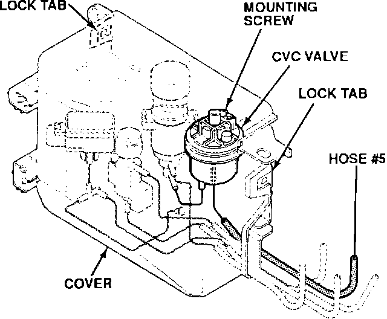

Emissions Control - Buzzing Noise (A/T)
YEAR1991 - 92
MODEL
LEGEND
with A/T
VIN APPLICATION
See VEHICLES AFFECTED
June 1, 1992
BULLETIN NO.
92-021
Buzzing Noise From the Emissions Control Box
PROBLEM
A buzzing/humming noise can be heard when accelerating or climbing a hill at engine speeds between 2,000 and 3,000 rpm.
NOTE:
The noise is loudest when the manifold vacuum is between 50 and 100 mm Hg.
VEHICLES AFFECTED
1991 Coupe - ALL
1992 Coupe - Thru VIN JH4KA82 . . . NC002517
1991 Sedan - ALL
1992 Sedan - Thru VIN JH4KA76 . . . NC021685
DIAGNOSIS
Pinch off the # 5 vacuum hose at the control box, and test drive the car. If the buzzing noise goes away, replace the constant vacuum control (CVC) valve.
NOTE:
Pinching off the # 5 hose disables the CVC valve, causing the check engine light to flash a code 12. To clear the code and reset the ECU, remove the # 15 AGC (7.5A) fuse from the under-dash fuse box. Leave the fuse out for approximately 10 seconds, then reinstall the fuse.
CORRECTIVE ACTION
Replace the CVC valve with the part listed under PARTS INFORMATION.
1. Remove the control box cover by depressing the lock tabs on each side of the cover.
2. Remove the CVC valve mounting screw, then turn the valve over to remove the two vacuum hoses.

3. Connect the vacuum hoses to the new CVC valve, then install the mounting screw.
4. Make sure all the vacuum hoses are properly connected, and reinstall the control box cover.
PARTS INFORMATION
Constant Vacuum Control (CVC) Valve
P/N: 17290-PY3-901
WARRANTY CLAIM INFORMATION
In warranty:
The normal warranty applies.
Out of warranty:
Any repair performed after warranty expiration may be eligible for goodwill consideration by the District Service Manager. You must request consideration, and get the DSM's decision, before starting work.
Operation number:
120130
Flat rate time:
0.5 hour (includes road test)
Failed P/N
17290-PY3-901
Defect code:
042
Contention code:
B07